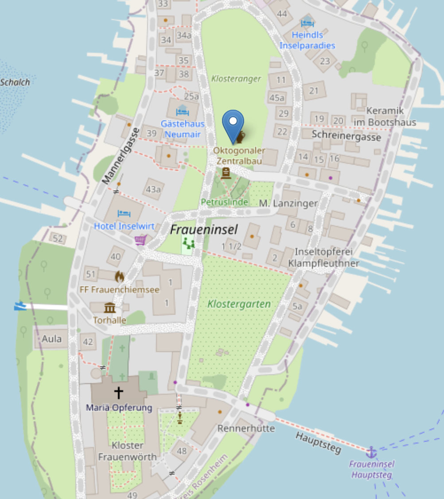

Venue
LMU Academy Frauninsel, Frauenchiemsee 50, 83256
⚠️ Note: Google Maps pins the location incorrectly. Please refer to the blue pin in the map below for the correct location.
Accommodation
Abtei Frauenwörth, Frauenchiemsee 50, 83256 Chiemsee
⚠️ Note: Quiet hours after 21:30. Smoking is prohibited. Please adhere to the dress code at the monastery.
By Public Transportation
- ~1-hour train ride from Munich Hauptbahnhof to Prien am Chiemsee (regional trains run hourly)
- ~8-minute bus (481) ride / 20-minute walk / Chiemsee bahn heritage train from Prien am Chiemsee station to Prien Hafen (harbor)
- ~30-minute ferry from Prien Hafen to Fraueninsel (runs every 30 minutes: see schedule)
By Car until Prien am Chiemsee
Take the A8 motorway from Munich toward Salzburg. Exit at Bernau am Chiemsee and follow signs toward Prien am Chiemsee.Fraueninsel is car free. Take ferry from Prien Hafen to Fraueninsel (see above).
There are paid parking areas near the lake in Prien am Chiemsee.